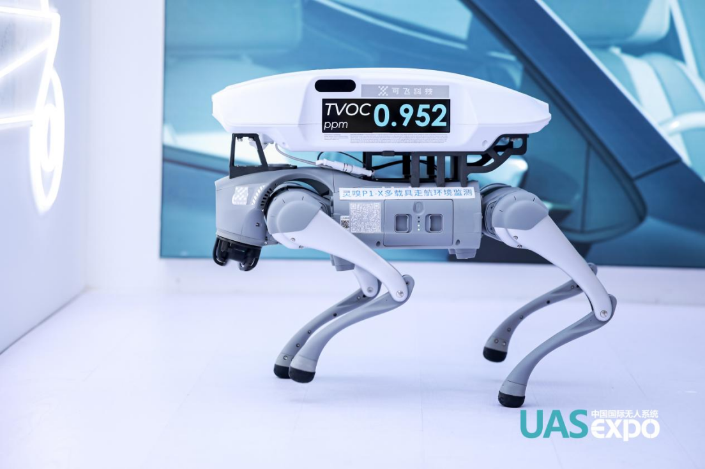
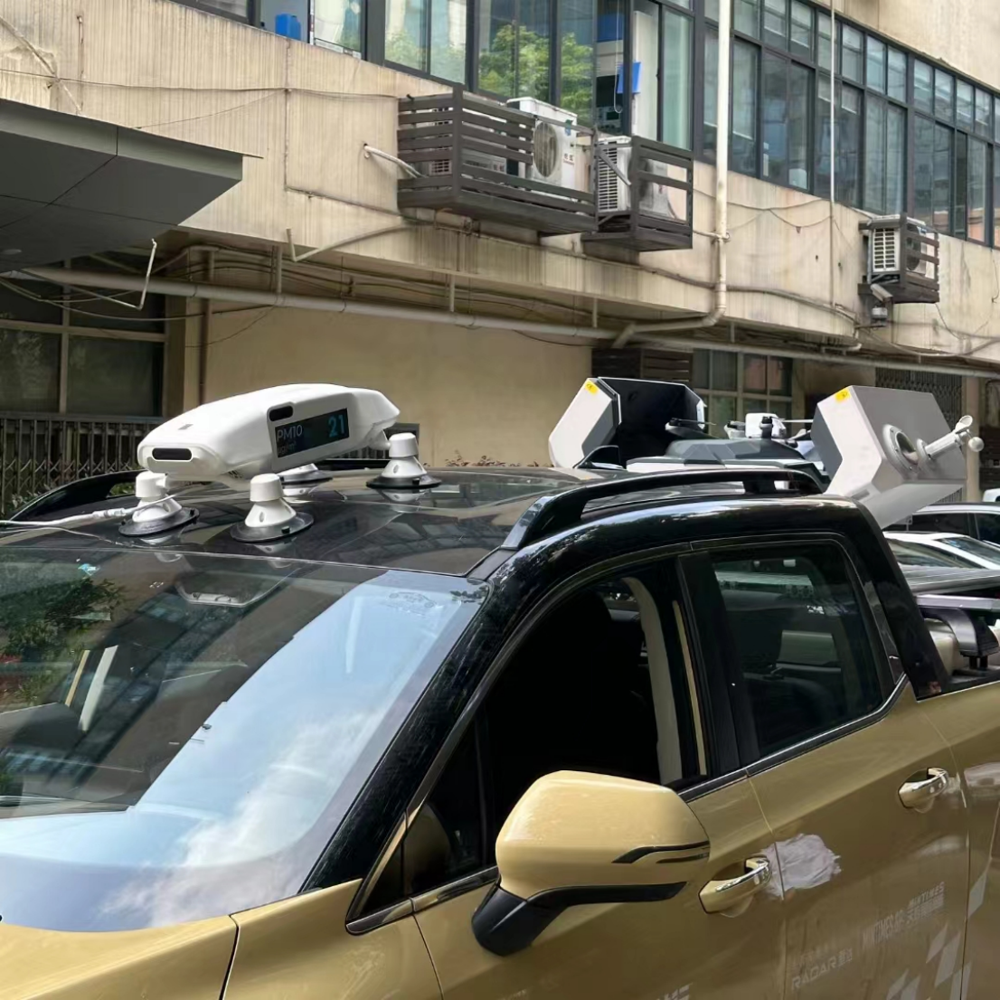

深圳可飞灵嗅P1-X机器狗面世 集创新与实用于一身
来源：碧水源
近日，深圳市可飞科技有限公司推出一款全新的环境监测工具——灵嗅P1-X机器狗，其以独特的创新性和实用性，吸引了众多行业用户的关注。
这一创新设计不仅拓宽了环境监测的边界，也展示了机器人技术在多领域融合应用的巨大潜力。机器狗作为移动平台，能够灵活穿梭于各种地形和环境中，搭载灵嗅P1-X后，可实时采集和传输环境数据，为环境监测提供更加全面、高效的解决方案。
据可飞科技工作人员介绍，灵嗅P1-X具备全面的自我监控和诊断能力，能够带来高效运维。此外，系统还设有两个LCD显示屏，可用于播放实时数据或定制信息，为用户提供直观、便捷的数据展示方式。
值得一提的是，灵嗅P1-X除了搭载于机器狗上，还能搭载在各式交通工具上，有望在不久的将来，打造一张成熟的城市环境监测网络，实时监测城市环境。
据悉，使用者可以通过“可飞时空大数据平台”实时概览功能查看实时浓度地图和数据分析，了解当前环境状况。同时，系统还支持历史云图功能，用户可以根据需求加载单、双时段历史数据，进行趋势分析和多源数据融合分析。此外，系统还具备污染事件自定义功能，可将“监测数值高”且“持续时间长”的数据组以“污染事件”的形式保存，为用户提供及时、有效的预警和处置方案。
灵嗅P1-X机器狗的亮相不仅展示了可飞科技在环境监测领域的创新实力，也为机器人技术在环境监测领域的应用提供了新的思路。随着相关技术的不断发展，相信未来会有更多创新应用涌现，为环境保护和可持续发展贡献更多力量。